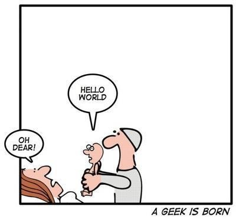

Съдържание
jQuery - какво, защо и как?
Hello World
Селектори и функции селектори
DOM манипулации
Манипулации на стиловете
Цикли
Събития
AJAX
jQuery - какво, защо и как?
Какво е jQuery?
Лека JavaScript библиотека (~90KB)
Позволява манипулации на DOM дървото, стиловете
Предоставя методи за управление на събитията
Позволява създаването на Анимации
AJAX
Има плъгин за почти всичко, от което имате нужда

Защо?
"write less, do more"
улеснява писането на JavaScript
Много сайтове ползват jQuery
Пример (1)
Как?
Download jQuery от jquery.com ИЛИ
Чрез референция към някой CDN, например google:
Актуални версии 1.11.3 и 2.1.4
Hello world
Селектори
Селекторите са същите като в css с малки изключения (CSS)
$("<селектор>") // jQuery("<селектор>")
Функции селектори (примери)
$("div").parent("<selector>")
$("div").parents("<selector>")
$("form").children("<selector>")
$("p").first()
$("div").last()
$(".selected").siblings("<selector>")
$("p").find("<selector>")
length
$("<селектор>") връща списък,
в който броя елементи можем да проверим с length
if ($(".selected").length > 0)
Манипулиране на DOM дървото
Добавяне на DOM елементи
$("body").append("<content>");
$("body").prepend("<content>");
$("li.even").before("<content>");
$("<selector/content>").insertBefore("<selector>");
$("li.odd").after("<content>");
$("<selector/content>").insertAfter("<selector>");
Пример 2.1
Премахване на DOM елементи
$("<selector1>").remove("<selector2>") – изтрива всички елементи избрани от selector2, които са деца на елементи избрани от selector1
Показване/скриване на DOM елементи
$("<selector>").show()
$("<selector>").hide()
$("<selector>").toggle()
Пример 2.2
Извиличане и задаване на съдържание
$("<selector>").html()
$("<selector>").html(htmlString)
$("<selector>").text()
$("<selector>").text(text)
Пример 2.3
Добавяне/махане на класове на DOM елемент
$("<selector>").addClass(string)
$("<selector>").removeClass(string)
$("<selector>").toggleClass(string)
$("<selector>").hasClass(string)
Пример 2.3
Mанипулиране на css стилове
$("<selector>").css(propertyName)
$("#menu").css("margin-top")$("<selector>").css(propertyNames)
$("#menu").css(["margin", "padding", "background-color"])$("<selector>").css(propertyName, value)
$("#menu").css("background-color", "red"); // лоша $("#menu").css("display", "none"); // практика $("#menu").hide();
Манипулиране на атрибути
$("<selector>").attr("<attribute name>", value)
$("<selector>").prop("<attribute name>", value)
$("#my-input").attr("type"); $("#my-input").prop("type");Параметърът value не е задължителен
$("<selector>").data( key, value)
Цикли в jQuery
jQuery.each( array, function(index, value)) - за списъци
var text = "{"; var arr = [ "one", "two", "three", "four", "five" ]; jQuery.each( arr, function( index, value ) { text += "{" + (index + 1) + " : " + value + "}"; if (index < arr.length - 1) { text += ","; } }); text += "}";
jQuery.each( object, function(key, value )) - за jQuery обекти
$( "li" ).each(function( index ) { $( this ).text() = index + " " + $( this ).text(); });
Събития
Какво са събитията?
Събитията са "неща", които се случват на DOM елементите
Събитията правят сайтовете интерактивни
Можем да пишем код, който да "реагира на тези събития"
Кодът ни може да използва информация за събитието от event обект
Всеки елемент може да "слуша" за определено събитие
Bubbling & Capturing
Bubbling – настъпването на едно събитие последователно от най-вътрешния/вложения към най-външния елемент
Capturing – настъпването на едно събитие последователно от най-външния към най-вътрешния/вложения елемент
Само bubbling се поддържа от всички популярни браузъри
- http://javascript.info/tutorial/bubbling-and-capturing
- http://stackoverflow.com/questions/4616694/what-is-event-bubbling-and-capturing
"Абониране" за събития
$("<selector>").on(events, selector, data, handler)
$("<selector>").onе(events, selector, data, handler)
$("<selector>").off(events, selector, handler)
НЕ ПОЛЗВАЙТЕ НИТО bind(), delegate(), live() ...
НИТО unbind(), undelegate() или die()
Други функции за "абониране"
.change(data, handler) <=> .on("change", data, handler)
.click(data, handler) <=> .on("click", data, handler)
.error(data, handler) <=> .on("error", data, handler)
.focus(data, handler) <=> .on("focus", data, handler)
.blur(data, handler) <=> .on("blur", data, handler)
Още функции за "абониране"
.focusin(data, handler) <=> .on("focusin", data, handler)
.focusout(data, handler) <=> .on("focusout", data, handler)
.keydown(data, handler) <=> .on("keydown", data, handler)
.keypress(data, handler) <=> .on("keypress", data, handler)
keyup(data, handler) <=> .on("keyup", data, handler)
И Още функции за "абониране"
.mousedown(data, handler) <=> .on("mousedown" ...)
.mouseup(...) <=> .on("mouseup", ...)
.mouseenter(...) <=> .on("mouseenter", ...)
.mouseleave(...) <=> .on("mouseleave", ...)
.mouseover(...) <=> .on("mouseover", ...)
.mouseout(...) <=> .on("mouseout", ...)
.mousemove(...) <=> .on("mousemove", ...)
Други функции за събития
.ready() - позволява да изпълним код след зареждане на DOM-a
.resize() <=> .on("resize", ...)
.scroll() <=> .on("scroll", ...)
.select() <=> .on("select", ...), работи само за input и textarea елементи
.submit() <=> .on("submit", ...)
Създаване на събития чрез jQuery
Чрез функцията trigger(), например $("#my-form").trigger("submit")
- Чрез функциите описани в предишните слайдове, например:
- $("#my-button").click();
- $(window).resize();
- $("#my-form").submit()
AJAX заявки
Какво? Защо? Как
AJAX = Asynchronous JavaScript and XML
Gmail, Google Maps, Youtube и Facebook ползват AJAX
Има няколко функции, чрез които могат да се изпълни AJAX заявка - .аjax(), .get(), .post(), .load()…
Благодаря
Марин Парушев
marin.parushev@sap.com